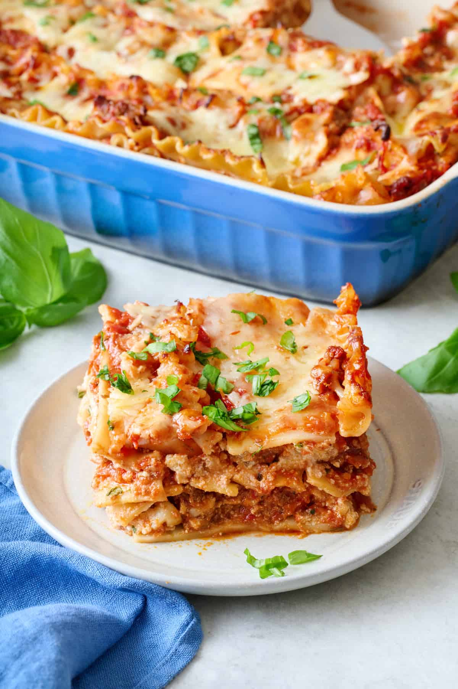

Ingredients
- 12 lasagna noodles
- 1 lb ground beef
- 1 small onion, chopped
- 2 cloves garlic, minced
- 1 can (28 oz) crushed tomatoes
- 1 can (6 oz) tomato paste
- 1 tsp salt
- 1/2 tsp black pepper
- 1 tsp dried basil
- 2 cups ricotta cheese
- 1 egg
- 2 cups shredded mozzarella cheese
- 1/2 cup grated Parmesan cheese
Instructions
- Preheat oven to 375°F (190°C).
- Cook lasagna noodles according to package instructions.
- In a skillet, cook ground beef, onion, and garlic until browned.
- Add crushed tomatoes, tomato paste, salt, pepper, and basil. Simmer for 20 minutes.
- In a bowl, mix ricotta cheese with egg.
- In a baking dish, layer noodles, meat sauce, ricotta mixture, and mozzarella.
- Repeat layers and top with Parmesan cheese.
- Bake for 35-40 minutes until bubbly and golden.
- Let cool for 10 minutes before serving.